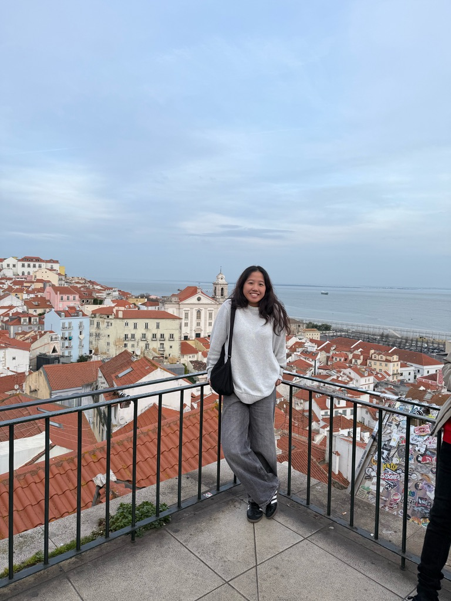
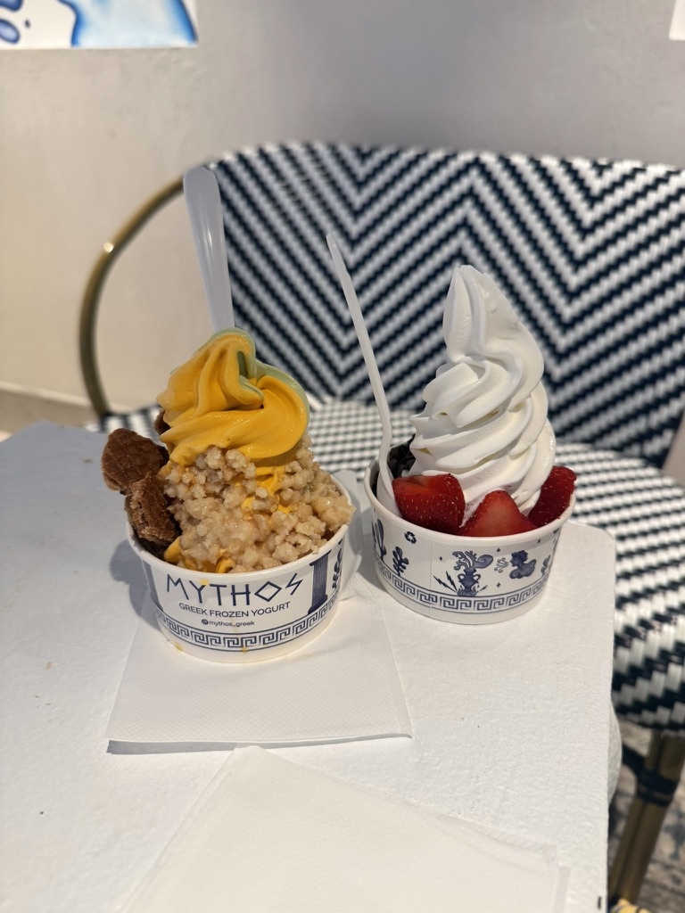
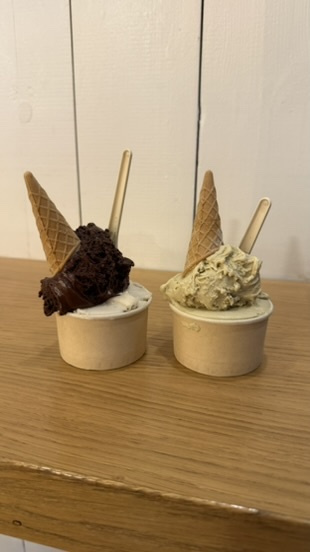
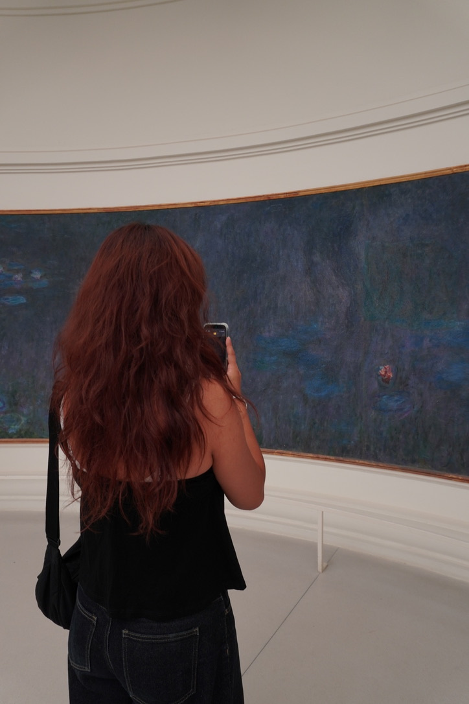
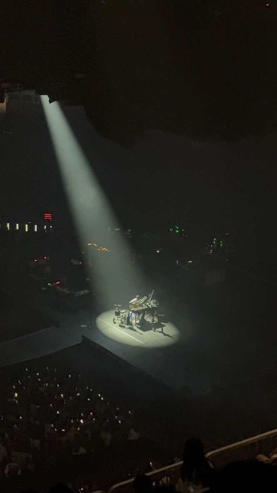
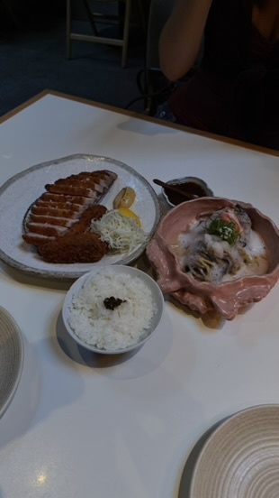
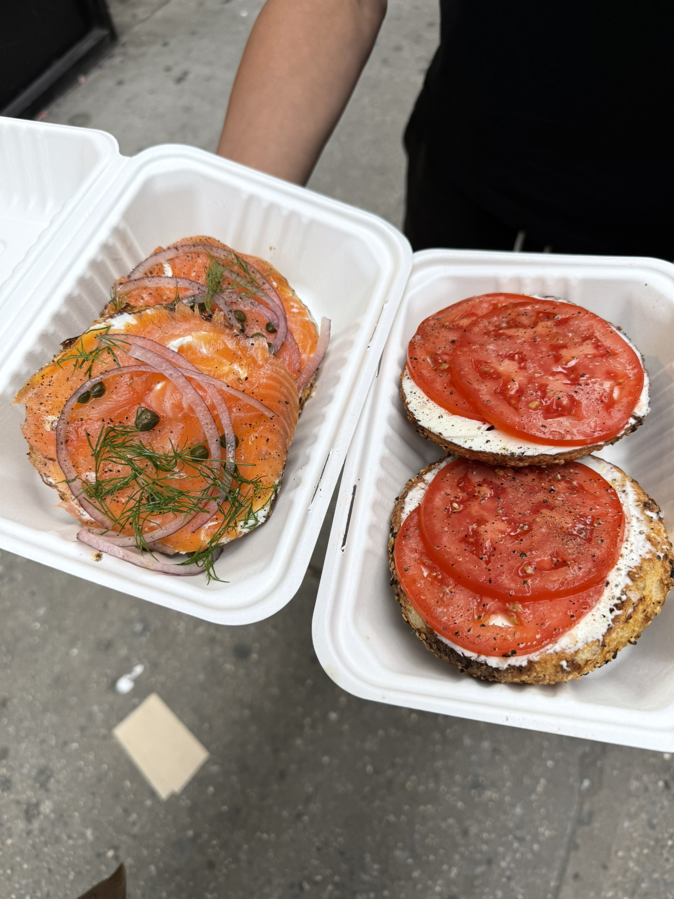
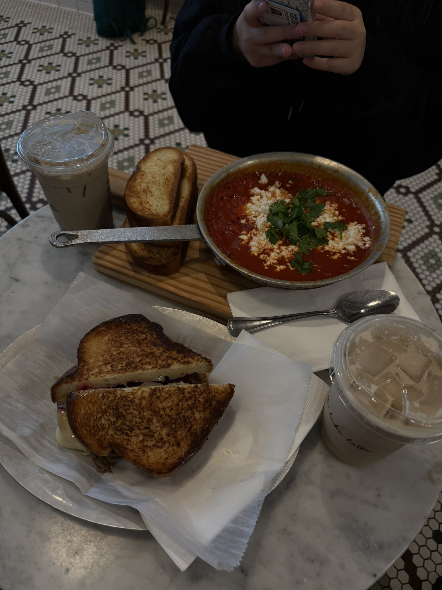

✳ A little about me
Get to know me

Hello, I’m Keira.
I'm currently a Freshman attending Babson College.
I currently am interested in the fields: Business Analytics, learning how to create solutions to real world problems with AI, and learning about the cross intersection between finance and technology.
In highschool I was an FRC Robotics team: the lead mechanic and the captain. Where we qualified for the World Championship, which started my love from problem solving. That eventually got me interested in tech, finance, and healthcare.
My key interests are: biotechnology, healthcare finance, AI and ML, and private equity.
As you can see, I enjoy traveling and getting good eats. Follow me on beli: k3i8a!
A look at what I do





